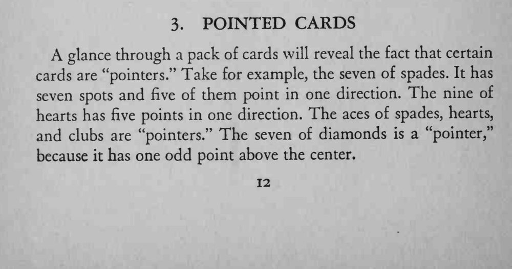
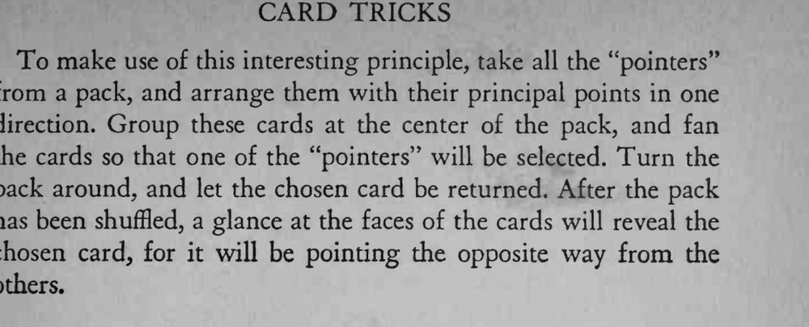

观众抽牌放回、反复洗牌之后，魔术师仍能一眼找出那张选牌。
这类“指向牌”整副牌里只有十来张，展牌时要把它们放在观众容易选到的位置。


A glance through a pack of cards will reveal the fact that certain cards are "pointers." Take for example, the seven of spades. It has seven spots and five of them point in one direction. The nine of hearts has five points in one direction. The aces of spades, hearts, and clubs are "pointers." The seven of diamonds is a "pointer," because it has one odd point above the center. To make use of this interesting principle, take all the "pointers" from a pack, and arrange them with their principal points in one direction. Group these cards at the center of the pack, and fan the cards so that one of the "pointers" will be selected. Turn the pack around, and let the chosen card be returned. After the pack has been shuffled, a glance at the faces of the cards will reveal the chosen card, for it will be pointing the opposite way from the others.